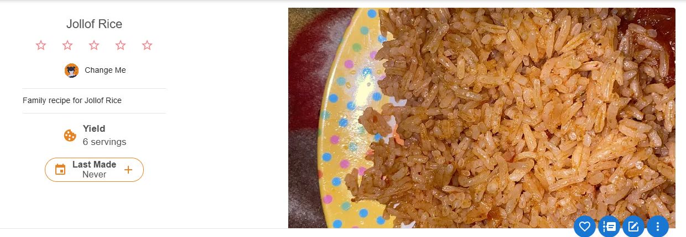

04Rows are not the app
Every table came back. The photo did not. Then Claude fixed the backup.
Live appLIVE

Restored, database onlyLOSS

Restored after Claude's fixPROVEN

Kane's own screenshots from one real ripcord fix run. The same kind of loss hit Vikunja: the attachment was listed but "The file does not exist."